Impressum
Angaben gemäß § 5 DDG
Oliver Herbert
[Postanschrift folgt]
Deutschland
Kontakt
E-Mail: contact@oliverherbertcello.com
Kontaktformular auf dieser Website
Verantwortlich für den Inhalt nach § 18 Abs. 2 MStV
Oliver Herbert, Anschrift wie oben
Oliver Herbert is a cellist who moves between orchestras, chamber music and projects of his own.
Alongside the cello classics, he performs the lesser-known and the new. His music-making often starts from a question: what is at the core of hearing and re-hearing? Where do musical worlds meet?
He appears as a soloist with conductors including Michael Tilson Thomas, Giancarlo Guerrero, Juanjo Mena and Reinhard Goebel, and in chamber music with artists such as Mitsuko Uchida, Janine Jansen and Tabea Zimmermann. His projects have brought composers such as Schnittke, Desenne and Crawford Seeger into focus, and he has premiered works by Helena Winkelman, Andrew Moses and others. He received a 2021 Avery Fisher Career Grant.
“The cello seems an extension of himself.”
Third Coast Review


Angaben gemäß § 5 DDG
Oliver Herbert
[Postanschrift folgt]
Deutschland
Kontakt
E-Mail: contact@oliverherbertcello.com
Kontaktformular auf dieser Website
Verantwortlich für den Inhalt nach § 18 Abs. 2 MStV
Oliver Herbert, Anschrift wie oben
This website collects as little as possible. Here is what happens when you visit.
Oliver Herbert, [address as in the Impressum], contact@oliverherbertcello.com
The site is hosted by Netlify, Inc. To deliver pages and protect against misuse, Netlify processes technical data such as your IP address, the time of your visit, the page requested and your browser type. Legal basis: Art. 6(1)(f) GDPR. A data processing agreement is in place.
If you write through the form or by email, your name, email address and message are used only to answer you, and deleted once the conversation is over. Form messages are delivered through Netlify Forms. Legal basis: Art. 6(1)(b) and (f) GDPR.
Videos load only when you click one. Only then does your browser connect to YouTube (Google Ireland Limited) in its privacy-enhanced mode, which passes your IP address and browser details to Google. Legal basis: your consent by clicking, Art. 6(1)(a) GDPR.
All fonts are served from this website. No connection is made to Google Fonts or any other font service.
A simple counter records page visits without cookies and without personal data. [Service to be named.]
For the length of your visit, your browser remembers whether the opening animation has played. No cookies are set.
You can ask to see, correct or delete your data, restrict or object to its use, take it elsewhere, and withdraw consent at any time (Art. 15 to 21 GDPR). You can also complain to a data protection authority, for example the Berlin Commissioner for Data Protection and Freedom of Information.
Last updated: [month year]
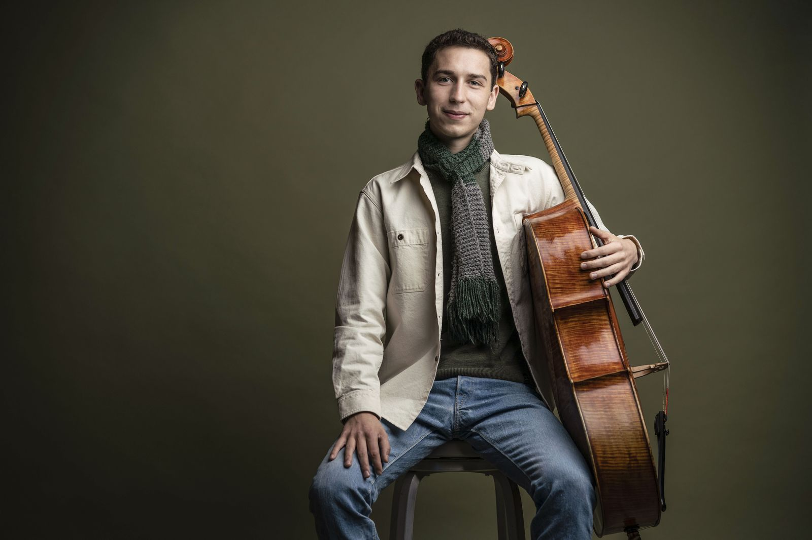
Oliver Herbert is a cellist who moves between orchestras, chamber music and projects of his own. He was born in 1997 in San Francisco.
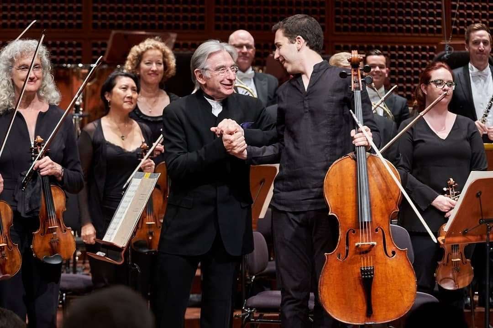
His first concerto appearance was with Bloch’s Schelomo with the Prometheus Symphony at 15. A few years later, he was invited through open audition to perform Strauss’s Don Quixote on the Chicago Symphony Orchestra’s Family Matinee Series, a work he performed the same season with the Curtis Symphony Orchestra. He made his San Francisco Symphony debut at the orchestra’s All San Francisco Concert in 2018, with Tchaikovsky’s Rococo Variations, and returned the following year for his subscription debut under Michael Tilson Thomas in Haydn’s Concerto in D major, later released by Warner Classics. Since then he has played with orchestras and conductors including:
“Full-throated but never indulgent tone, crisp yet expressive phrasing.”
San Francisco Classical Voice
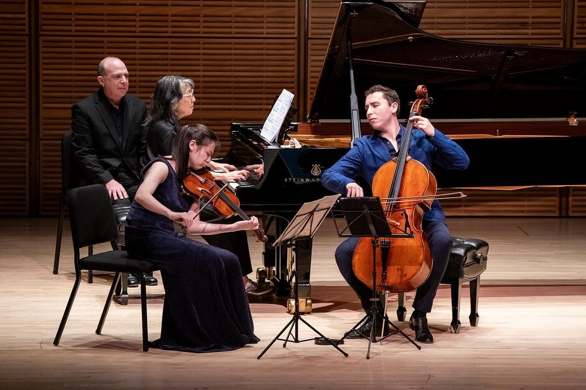
Chamber music is at the core of his musical life. He spent formative summers at the Ravinia Steans Music Institute, Verbier Festival Academy, and Marlboro Music. He is a regular guest at festivals and venues such as the Moritzburg Festival, La Jolla SummerFest, Rheingau Festival, ChamberFest Cleveland, Philadelphia Chamber Music Society, Capital Region Classical, Utrecht Festival, 92nd Street Y, and the Ravinia Festival. A highlight of recent seasons was a North American tour with Mitsuko Uchida and musicians from Marlboro Music, including a performance at Carnegie Hall. He has collaborated with artists such as Janine Jansen, Jonathan Biss, and Tabea Zimmermann. He plays in Trio Saye with Abigél Králik and Arash Rokni, whose first concert in Brussels in 2024 included the world premiere of Helena Winkelman’s Diurne.
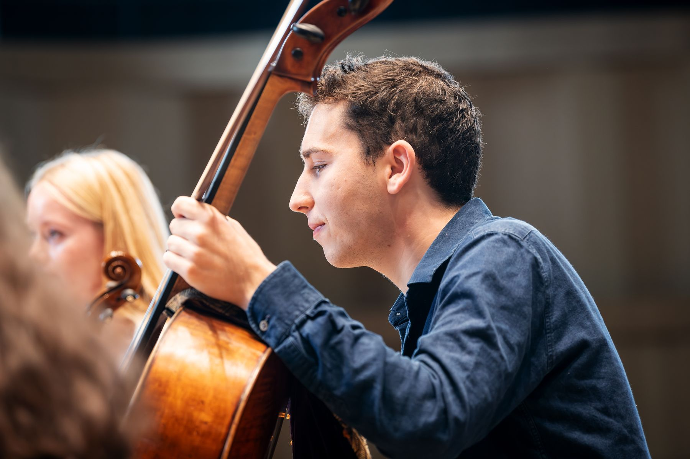
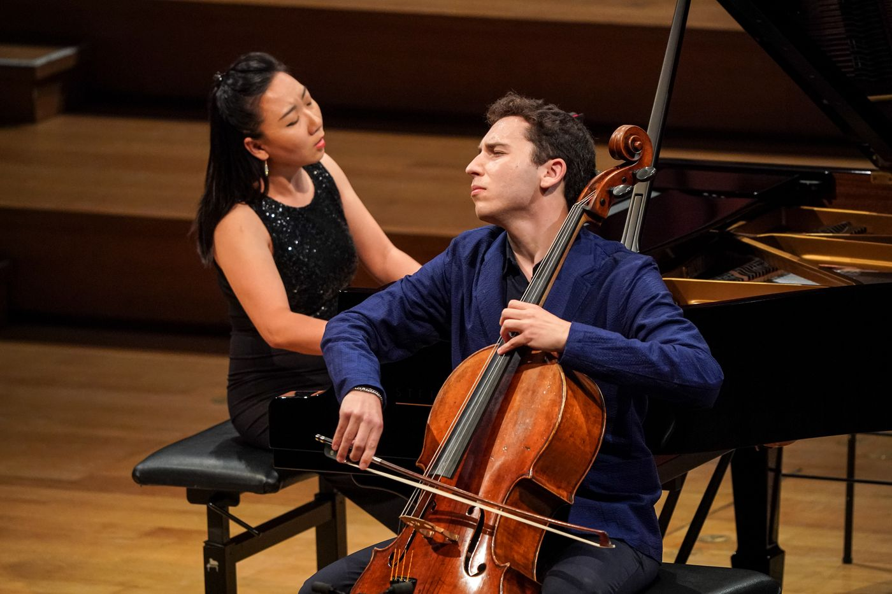
His recital work has included the six Bach suites in a single program and the complete Beethoven sonatas across one series in Chicago. His programs often set a well-known work beside one that is rarely heard: Villa-Lobos and Rachmaninov, Beethoven’s first and last sonatas framing Fauré’s two, or Lyatoshinsky and Gubaidulina alongside Brahms, Schnittke and Shostakovich. In recent seasons he dove into little-played repertoire including Schnittke’s Second Sonata, Saint-Saëns’s unfinished Third Sonata, and Różycki’s Sonata. Frequent piano partners have included Xiaohui Yang, Arash Rokni, Olga Zado and Martin Klett.
“Deeply moving vocal inflections in extreme ranges.”
Philadelphia Inquirer
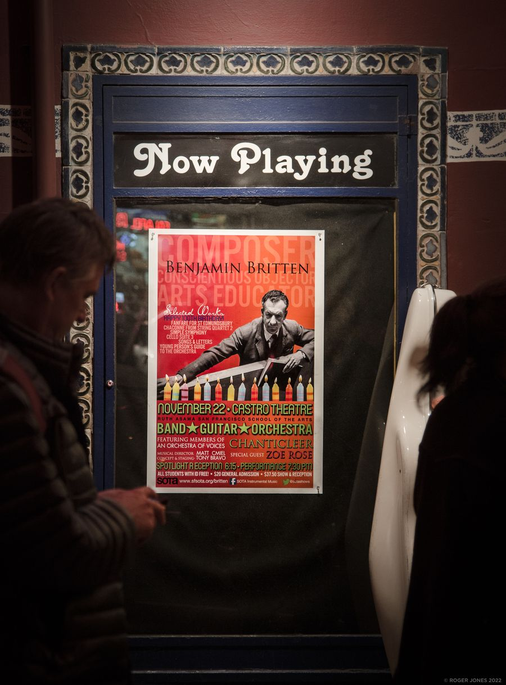
His own programs grew out of a habit that started early. As a teenager he went through scores, archives and recordings, often leading him to one question in particular: why is this great piece so seldom played? Over time, that curiosity shaped how he combines music and builds programs.
Wie Bitte? (2026) was a reflection on repetition and re-hearing, and on how meaning is constructed when things return. It ran from Bach’s Canon for Four Voices to Helena Winkelman’s Sleipnir the Eight-Legged, the world premiere of Andrew Moses’ Absconditus, and Adams’ Shaker Loops.
Wo Licht ist… (2024) started from the German saying “where there is light, there is also shadow,” moving from French viol music through Crawford Seeger and Beethoven to Desenne’s Jaguar Songs.
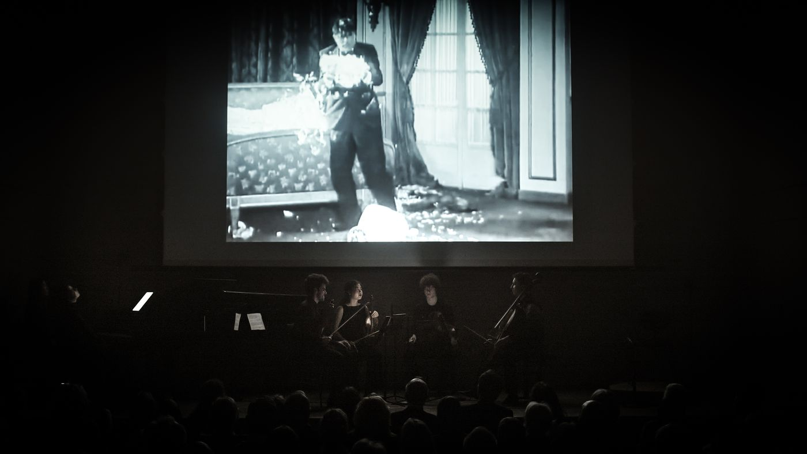
Pressure / Druck (2025) paired Hindemith, Shostakovich and Schoenberg with silent film scenes from the first half of the 20th century. Its subject was ambition, the pressure of building and maintaining power for those who seek it.
For Deutschlandfunk’s Raderbergkonzerte in Cologne (2024), Desenne, Crawford Seeger, Villa-Lobos and Fauré traced the exchange between the Americas and Europe.
At the TICA Festival in Hong Kong (2023), Andrew Moses’ Ecstatic Immanence had its premiere with elements including a live feedback loop between cello and thundersheet, exploring the line between acoustic and electronic sound.
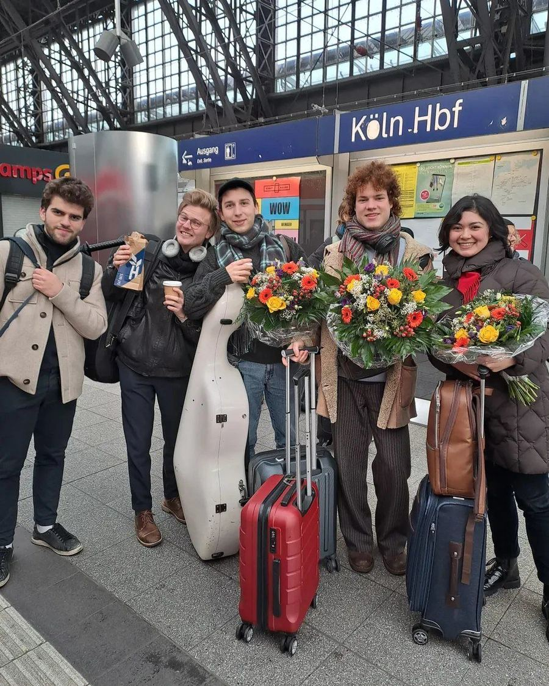
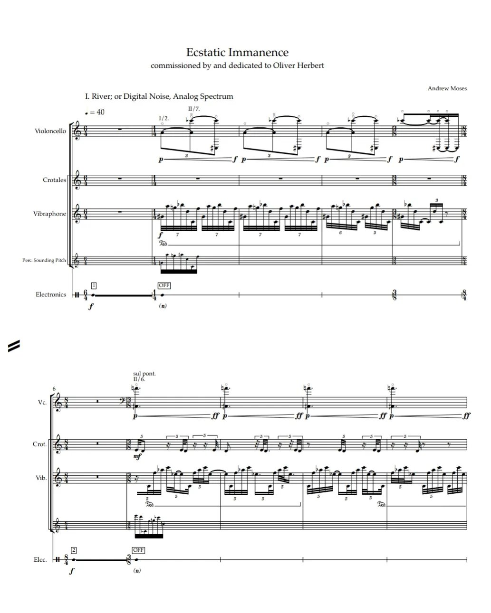
Oliver has received impulses from musicians such as Reinhard Goebel, Andreas Staier, and Marcel Ponseele and Il Gardellino. Early on, his teacher Peter Wyrick introduced him to the playing of Anner Bylsma, an encounter that left a lasting impression. Current projects in this area include the sonatas of Beethoven on gut strings and fortepiano, as well as a program for five-string piccolo cello and harpsichord with Arash Rokni, including the music of Eccles, Sainte-Colombe, Marais, Schmelzer, d’Anglebert and Bach.
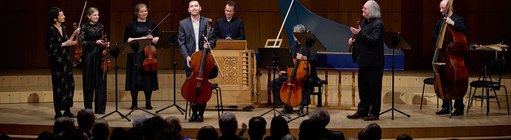
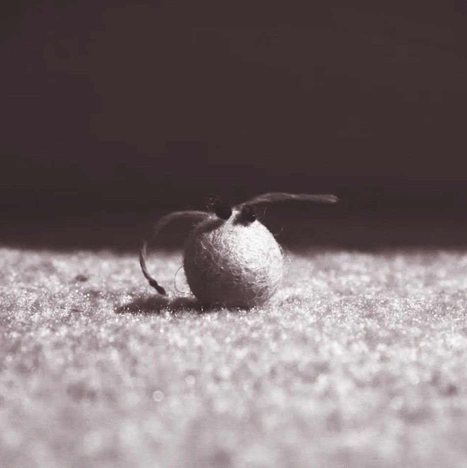
Across disciplines, he has collaborated with Kyle Marshall Choreography on the music of Julius Eastman at the New World Symphony, and on multimedia work with filmmaker Mimi Pfahler. He also makes stop motion films of his own.
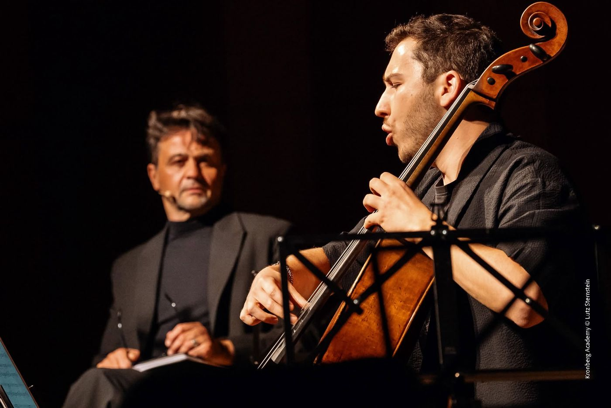
For the 2026 Kronberg Festival he created a program centered on courage with actor Michael Rotschopf, with a focus on the music of Dawn Avery, Xenakis, and Henze. He also facilitated a commission from the Max Planck Institute for the Science of Light: Zeitgeber for two cellos by Žibuoklė Martinaitytė, written for the institute’s opening ceremony in 2024. The piece draws on the body’s circadian rhythms and the Fourier transform, and on the literal meaning of the word: a “giver of time.”
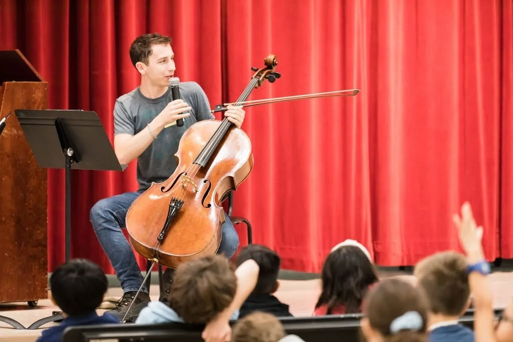
Working with young musicians is a real joy for him. Alongside regular school visits, he has given masterclasses at the San Francisco Conservatory of Music, Brown University, the University of Puget Sound, the Omaha Conservatory and the University of Hong Kong, and for the Minnesota Youth Orchestras, the Eugene Symphony and the YARO Exzellenz Forum in Rostock. He taught at the Janigro Festival in Italy in 2023 and 2025, and in 2027 he is a tutor for Mit Musik Miteinander at Kronberg Academy. He has also developed educational projects around the ensemble music of Paul Desenne.
He plays primarily on a Guadagnini cello that once belonged to the cellist Antonio Janigro, on loan from the Janigro family.
He began on violin and piano before switching to the cello at seven. His formative teachers were Iris Pingel and later Peter Wyrick in San Francisco. He went on to study with Clive Greensmith at the Colburn School, with Carter Brey, Peter Wiley and Pamela Frank at the Curtis Institute of Music, and with Frans Helmerson at Kronberg Academy.
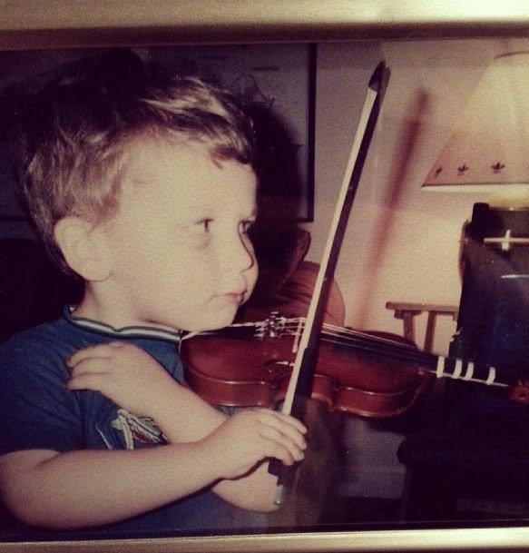
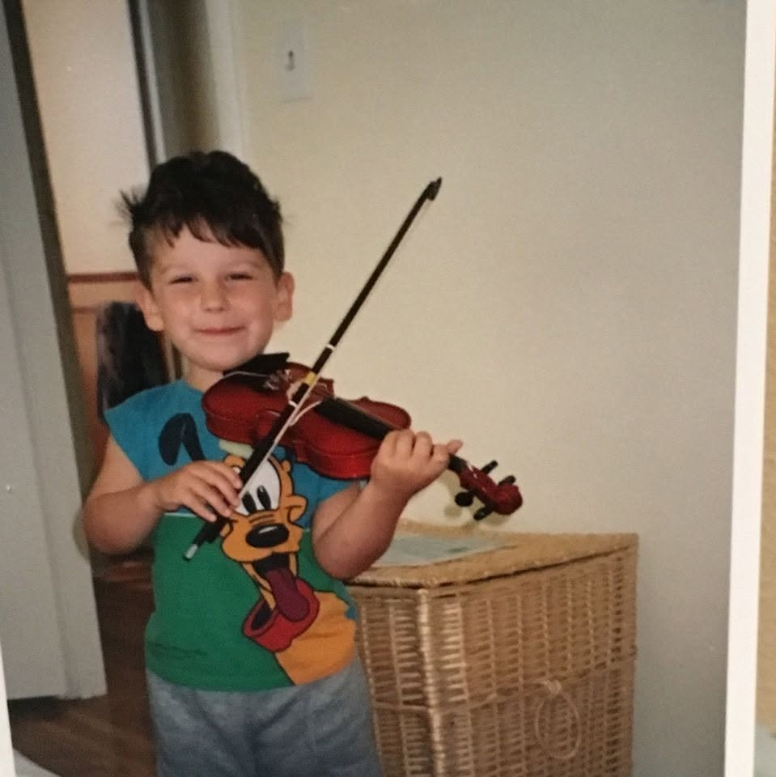
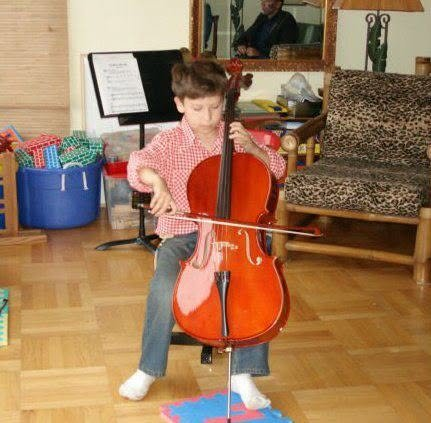
Oliver lives in Berlin with his boyfriend and spends much of the year traveling for concerts and projects. Away from the stage, he is usually planning the next project or journey, cooking, or recovering from a long concert evening.
Featured on PBS, NPR’s From the Top, WQXR, WDR, Deutschlandfunk, HR and ARD
For programs and press, free to use. About 480 words.
Oliver Herbert is a cellist who moves between orchestras, chamber music and projects of his own. Alongside the cello classics, he performs the lesser-known and the new. He received a 2021 Avery Fisher Career Grant.
As a concerto soloist he has appeared across the Americas and Europe with conductors including Michael Tilson Thomas, Giancarlo Guerrero, Juanjo Mena, Reinhard Goebel, Teddy Abrams, Alexander Shelley and Alexander Prior. He made his San Francisco Symphony debut at the orchestra’s All San Francisco Concert in 2018 and returned the following year for his subscription debut under Tilson Thomas, of which San Francisco Classical Voice wrote of his “full-throated but never indulgent tone, crisp yet expressive phrasing… youthful but magisterial.” Early recognition came through an open audition to perform Strauss’s Don Quixote on the Chicago Symphony Orchestra’s Family Matinee Series. He played the work the same season with the Curtis Symphony Orchestra, and the Philadelphia Inquirer heard “deeply moving vocal inflections in extreme ranges” and “all the depth of an established soloist.”
His own projects often start from a question: what it means to hear something again, or where musical worlds meet. They have included programs for Deutschlandfunk’s Raderbergkonzerte and the TICA Festival in Hong Kong, a sustained focus on the music of Schnittke, Paul Desenne and Ruth Crawford Seeger, and premieres of works by Helena Winkelman, Žibuoklė Martinaitytė and Andrew Moses.
As a chamber musician he appears at Marlboro Music, the Moritzburg and Rheingau Festivals, La Jolla SummerFest, ChamberFest Cleveland, the Philadelphia Chamber Music Society, the Utrecht Festival, the 92nd Street Y and Ravinia. Highlights include a North American tour with Mitsuko Uchida and musicians from Marlboro, ending at Carnegie Hall, and collaborations with Janine Jansen, Jonathan Biss and Tabea Zimmermann.
His recordings include Haydn’s D major Concerto with the San Francisco Symphony and Michael Tilson Thomas, released by Warner Classics among the highlights of Tilson Thomas’s final season as music director; Frame of Mind (2020), with pianist Xiaohui Yang, pairing Fauré’s two sonatas with Janáček’s Pohádka; and Beethoven’s Triple Concerto, recorded live with Dora Bratchkova, Olga Zado and the Mannheimer Philharmoniker under Boian Videnoff (MaPhil Records, 2026).
He has received the Verbier Festival’s Jean-Nicolas Firmenich Prize and top prizes at the Lutosławski International Cello Competition and the Klein and Stulberg International String Competitions, and in 2025 he was selected for the Orpheum Foundation’s program for young soloists. He has been featured on PBS’s Now Hear This, NPR’s From the Top and WQXR, and on German radio including WDR, Deutschlandfunk, HR and ARD.
Born in San Francisco, he studied at the Colburn School and the Curtis Institute of Music with Clive Greensmith, Carter Brey, Peter Wiley and Pamela Frank. In 2026 he graduated from Kronberg Academy, where he studied with Frans Helmerson with the support of the Nanno Lenz Patronage. He plays a Guadagnini cello that once belonged to Antonio Janigro, on loan from the Janigro family.
“The tricky pyrotechnics essential to any concerto came through cleanly, but even more impressive were the dexterity and sweetness that Herbert brought to his assignment.”
“Expansive tone, rich and full yet strikingly clear. Crisp articulation, impressive spiccato.”
“Throughout the performance, Herbert tested the limits of the cello’s softest dynamics, pulling the listener in. The performance was transfixing.”
“From his opening notes it was immediately apparent that Herbert has a very vocal approach to his playing and regardless of the technical demands he makes his cello sing.”